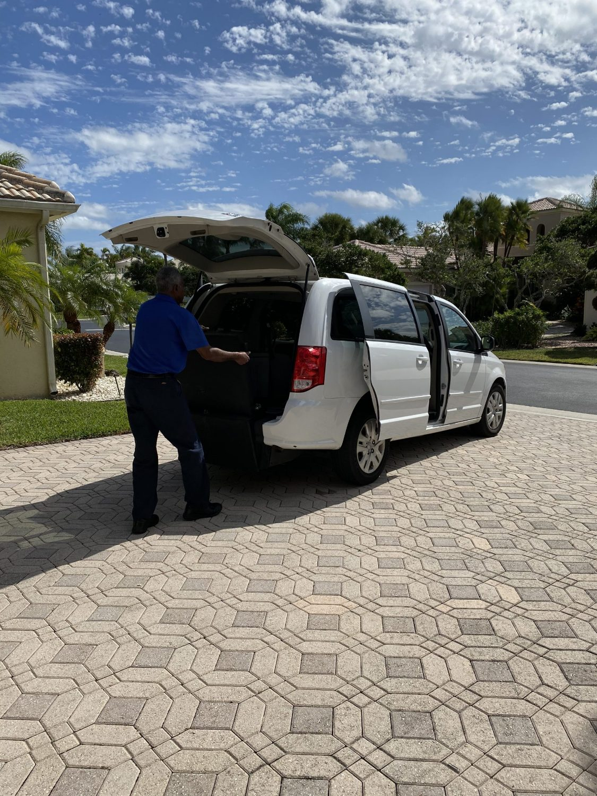

Home · About
Care is where we started.
Always On Time Transportation was built on a simple belief: getting to care should be safe, dignified, and dependable — for the rider, and for the family who worries.
Our story
From home health care to the driver's seat
Our founder spent years as a home-health-care worker, helping seniors with the daily needs that keep life comfortable and independent. Time and again, the same gap appeared: getting to appointments was the hardest part — and the riskiest to get wrong.
Always On Time was created to close that gap, bringing the same personal, patient care from the living room to the road. Today we're a licensed, insured fleet serving two Florida regions — but the promise hasn't changed. We treat every rider like family, because to someone, they are.

What you can count on
Reliability and reassurance, first
We're not a rideshare app. Our riders are often heading to or from medical care, so we design every trip around calm, dignity, and being on time.
Safe & reliable
Fully licensed and insured, with trained drivers, well-maintained vehicles, and proper securement on every ride.
Prompt & courteous
We plan around your appointment and arrive early — so you get there with time to spare and no stress.
Personal & dignified
Known drivers who help door to door and treat every rider with patience and respect. Peace of mind, delivered.
Where we serve
Two regions, one standard of care
Based in Delray Beach and Stuart, we cover Palm Beach County and the Treasure Coast — available 24/7 with advance notice.
Palm Beach County
Delray Beach — main office
(561) 444-7411 100 E Linton Blvd, Ste 153A/152ADelray Beach, FL 33483